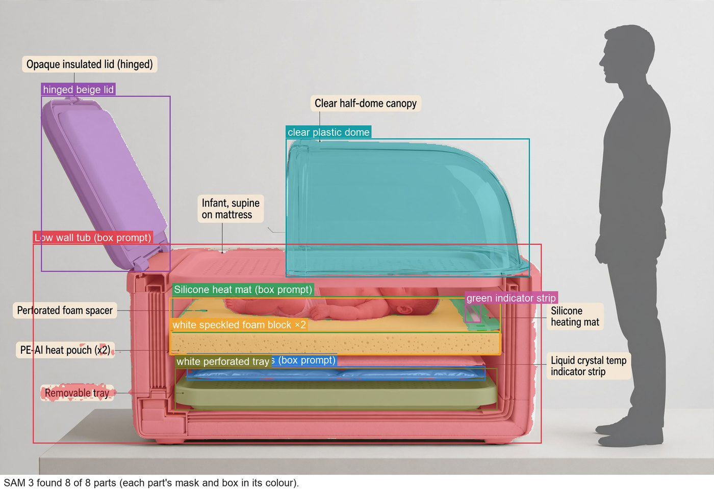

The critic measures the pixels against the design: the warmer is drawn 2.7× too large for its
65 cm, and the heating mat that touches the baby is not visible. A targeted redraw prompt follows.
Round 1 · faithful

SAM finds all 8 parts where the design puts them: wax pouches under the mat, foam spacer,
clear canopy, temperature strip. Only then are the labels, scale bar and assembly steps added.